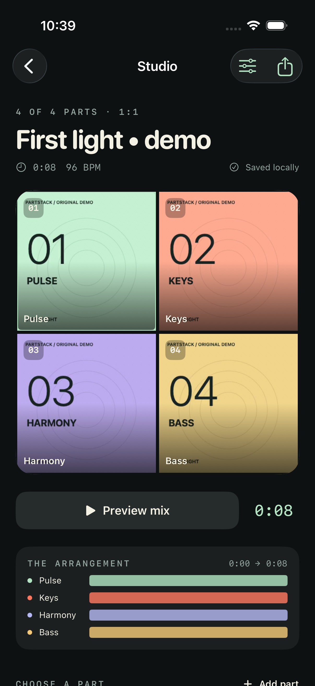

Your pocket ensemble
Your sound.
Every part.
Record a melody. Add a harmony. Bring in the beat. Build your own layered audio or split-screen music video, one performance at a time.
Meet your studioFor iPhone & iPad · iOS 18 or later
Planned U.S. launch: $29.99, one-time purchase.
No subscription, ads, or account. App Store release pending.

Make room for your ideas.
Choose Audio for microphone-only recording or Video for a filmed performance. Start with any number of parts from 2 to 9, then add more as you go.
Find the right balance.
Listen to earlier parts through headphones as you record. Adjust volume, mute or solo parts, trim a take, and nudge timing in 1 or 10 millisecond steps.
A mix to share. A session to keep.
Export M4A audio or, from a Video session, an MP4 mosaic. Save an editable session backup with your recordings, guide and mix settings.
Your recordings stay close. PartStack stores sessions on your device and does not upload recordings to a developer-operated service. You choose what to save or share.
Use wired headphones for dependable recording timing. Recordings and imported clips can be up to 10 minutes. PartStack does not include a commercial music catalog.